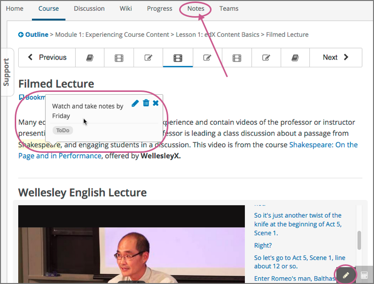
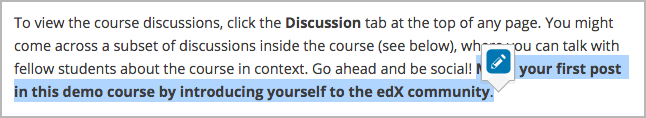
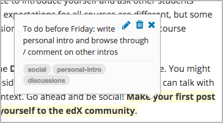
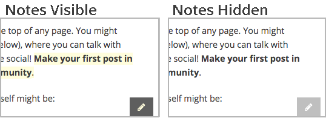

This topic describes how to work with notes in your edX course.
As you work through an edX course, you may want to highlight a particular passage or make a note about what you have read. In some edX courses, you can highlight passages and make notes right in the course.
Note
You can create notes for most text in the body of the course. However, notes are currently not available for exercises, videos, or PDF textbooks.
When a course includes the notes feature, every page has a Notes page at the top and a pencil icon in the lower right corner.
Your notes can contain text as well as tags that help you organize and find your notes. You can see individual notes inside the course content, or you can see a list of your notes on the Notes page. For more information, see The Notes Page.
You can use either the mouse or keyboard shortcuts to create, access, and delete notes. For more information about using keyboard shortcuts, see Keyboard Shortcuts for Notes.
To highlight a passage or add a note that includes text and tags, follow these steps.
Select the text that you want to highlight or make the note about. You can select as much text as you want.
When a pencil “edit” icon appears above the selected text, select the icon to open the note editor.
When the note editor opens, enter your note and any tags that you want to add. You can also save the highlight for the passage without entering a note or tag.
To highlight a passage without adding a note or tag, select Save or press Enter. When you move your cursor over the highlighted text, the note field contains the words “no comment”.
To enter a note, select Comments, and then type the text of your note. Your note can contain as many words as you want.
To add one or more tags, select Add some tags here, and then type any tags that you want to add.
Tags cannot contain spaces. If you want to add a tag that has more than one word, type multiple words as one word with no spaces, or use hyphens (-) or underscores (_) to separate words in the tag.
After you finish writing your note and adding tags, select Save or press Enter. The note editor closes, and the text that you selected remains highlighted.
You can view your course notes in two places.
You can view individual notes on the page where you created the notes. To see your notes, go to the unit that contains your note and move your cursor over or select the highlighted text. When you select the highlighted text, your note remains open until you move outside the highlighted text.
You can view a list of the notes you have made in the course on the Notes page. You can also search your notes and tags on this page.
On the Notes page, you can see a list of the notes you have made in your course. You can also search the text of your notes or the tags that you added to your notes.
The Notes page lists your notes by the date you created or edited them, with the most recently modified first. The page shows you both the text that you selected and the note that you made. You can also see the following information next to each note.
A link to the location in the course that contains the highlighted text and your note. To go to that location, select the link under Noted in.
The time and date when you last edited the note.
Any tags that you added.
To edit a note, follow these steps.
In the course body, move your cursor over the highlighted text until your note appears.
When the note appears, select the pencil icon in the upper right corner to open the note editor.
In the note editor, edit your note, and then select Save.
To delete a note or highlight, follow these steps.
Move your cursor over the highlighted text until your note appears.
When the note appears, select the trash icon in the upper right corner to delete the note or highlight.
By default, you can see all of your notes. You can hide your notes, and show them again, by selecting the pencil icon in the lower right corner. When the pencil icon has a dark gray background, notes are visible. When the pencil icon has a light gray background, notes are hidden.
Note
If you hide notes, you cannot make new notes. To make new notes, select the pencil icon to show notes.
To search your notes, follow these steps.
At the top of any course page, select Notes to open the Notes page.
In the upper right corner of the page, type a search term in the Search notes for field. You can search for the text of a note, or you can search for a tag you created.
Select the magnifying glass icon or press Enter.
You can use keyboard shortcuts to create, edit, and delete your notes.
Note
These keyboard shortcuts are for both PCs and Macintosh computers. However, you can only use these keyboard shortcuts on browsers that support caret browsing.
Before you use the following keyboard shortcuts, you must make sure that notes
are visible. To show or hide notes, press Ctrl + Shift + left bracket ([).
To create a note using keyboard shortcuts, follow these steps.
Enable caret browsing mode.
Use the arrow keys to move the cursor to the left of the text that you want to highlight.
Hold down Shift + right arrow to select the text.
Press Ctrl + Shift + right bracket (]) to open the note editor. The
note editor opens with the cursor in the text field.
In the text field, type your note.
To add tags, press Tab to move to the tag field, and then add your tags.
To save your note, press Tab to move to the Save button, and then press Enter.
To close the note editor without creating a note, press Tab to move to the Cancel button, and then press Enter. You can also press Esc to close the note editor.
To edit or delete a note, follow these steps.
Press Tab to move focus to the note that you want.
Press Ctrl + spacebar or Ctrl + Enter to open the note editor.
Press Tab to move the cursor to the text field or the tag field, and then make the changes that you want.
Press Tab to move to the Edit, Delete, or Close button, and then press Enter.
To close the note editor without making any changes, press Esc.
{kind=link}
{kind=link}
{kind=link}
{kind=link}
{kind=link}
{kind=link}